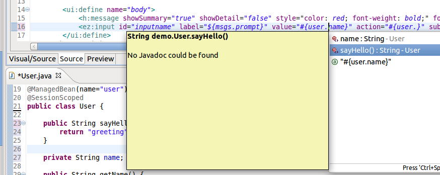
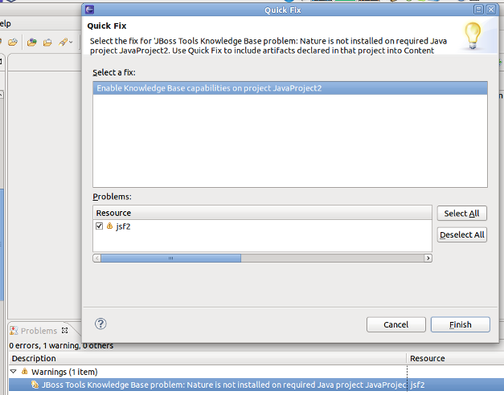
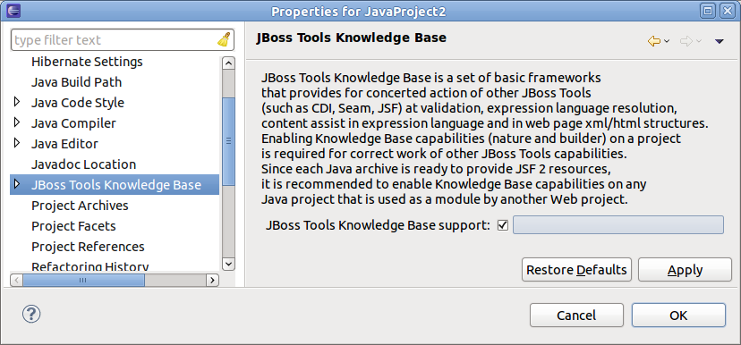
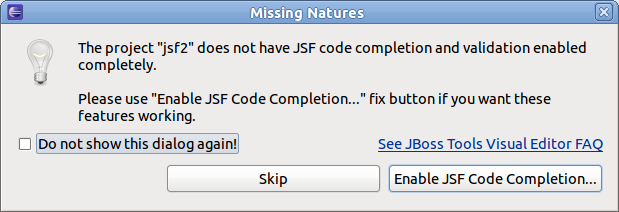

JSF 2
@ManagedBean support
JSF Tools now support managed beans annotated @ManagedBean. This support includes EL code completion, validation, refactoring, OpenOns (Ctrl+Click) and searching (Ctrl+Shift+G).
Wwith this existing applications and examples will no longer have error markers for EL expressions that refer to @ManagedBeans. For new development consider use CDI beans with @Named instead for fuller integration.
<faces-config metadata-complete="true">
<faces-config
metadata-complete="true"> in faces-config.xml JSF Tools will ignore bean annotated @ManagedBean according to JSF-2 spec.
JSF capabilities
Projects w/ no web.xml
Add JSF Capability dialog which were used to enable JSF on projects required an web.xml even for JavaEE projects. That limitation and dialog has now been removed. Now all you need to enable JBoss JSF Tools support is to install JSF facet into the project and things will just work.
Project->Configuration->Add JSF Capability will lead you to Project Properties->Facets property page. Web.xml is not required for this.
Resources in related non-WTP projects
If you project have resources in related projects which does not have JBoss Tools Knowledgebase Builder installed JBoss Tools cannot "see" the resources inside these projects and you might get false warnings.
To help avoid this problem JBoss Tools now warns if it detects project dependencies which should have the knowledgebase builder enabled to make it visible to JBoss Tools and be available in code completion, validation and resource lookups.
A QuickFix is available for the warning so it is easy to fix and of course if you do not wish your projects to have the build you can disable the Warning in Preferences.
It is also possible to enable the support via project properties page:
If you missed the warning you will be asked to fix the configuration problem when you are opening any XHTML or JSP page with JBoss Tools Visual Page Editor.
RichFaces
RichFaces 4 tag library is now shown in Palette by default istead of RichFaces 3. You can switch it to RichFace 3 via Show/Hide dialog.